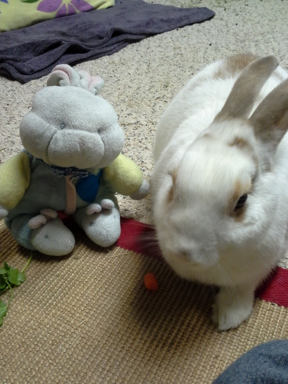
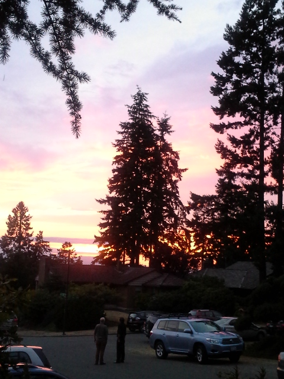

Hey all! Over the years I've acquired a hobby and love of taking photos - capturing fun and beautiful moments - and I wish you to enjoy them all!
Just something that is all me! My dad set up this for me on my birthday, obviously, and it was wonderful
If you must know, I absolutely love bunnies and it's been great to have the chance to bunnysit our friends' bunny rabbit
Now a preview of what's to come! Theses unique and fun sights are what I love to photograph!